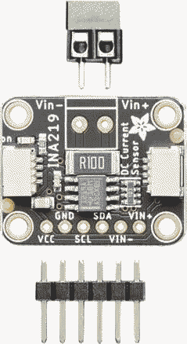
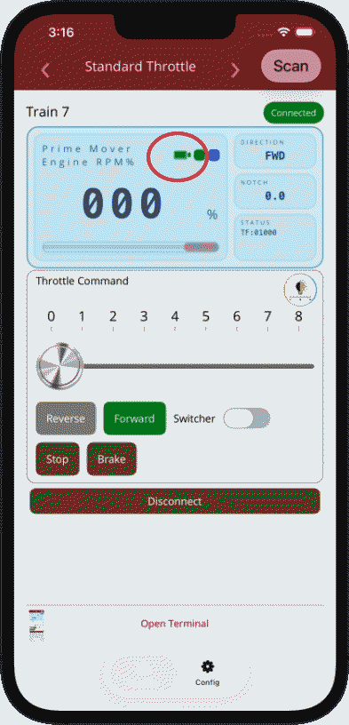
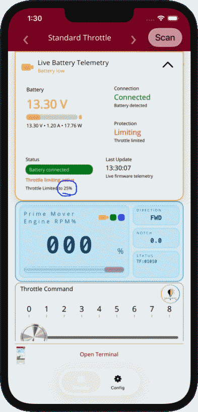
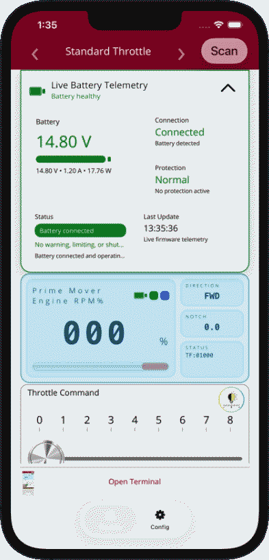

Live battery telemetry with INA219 support.
The app can now show live battery information when an INA219 sensor board is installed in your buildout and battery monitoring is configured in the app. This adds visibility into voltage, current, power, battery protection state, and recovery behavior without cluttering the normal throttle experience.
The INA219 is a current and voltage monitoring board
The INA219 is a compact sensor board used to measure battery voltage, current draw, and calculated power. In practical terms, it gives the throttle controller a live view of how the battery is behaving while the train is running. That makes it possible to detect low-voltage conditions, disconnected batteries, and other power-related conditions that would otherwise be hidden from the user.
The image below shows the INA219 board enlarged so it is easier to recognize in a buildout.

Press the battery button to open the telemetry drawer
When the INA219 is active, the throttle screen can show a battery indicator button near the status area. Pressing that battery button opens the battery telemetry drawer. The drawer expands above the throttle screen and gives you a more detailed live view of battery status without forcing you to leave the main control page.

Battery button
This is the entry point for battery details. Tap it to open the drawer and view live telemetry and protection status.
Non-intrusive design
Battery information stays available when needed, but does not take over the entire throttle interface during normal use.
What the battery drawer is telling you
The drawer is designed to give a quick summary and a deeper operational view at the same time. It can show both live measurements and the controller's interpretation of those measurements.

Battery voltage
Shows the current measured battery voltage. This is often the most important number for understanding whether the pack is healthy, dropping under load, or approaching a configured protection threshold.
Connection
Indicates whether the battery is detected. This helps identify a disconnected battery, a collapsed supply, or a sensor configuration issue.
Current and power
The drawer can also show current draw and calculated power. This helps explain not just battery level, but how hard the system is working in real time.
Protection state
This tells you whether the controller is operating normally, warning, limiting throttle, or protecting the system because voltage conditions have crossed a configured threshold.
Status messages
These short messages summarize what the controller is doing, such as battery connected, throttle limiting active, or other protection-related conditions.
Throttle limited indicator
When a low-voltage protection mode is configured to reduce available output instead of stopping immediately, the drawer can show the active throttle-cap percentage so the user understands why full throttle is not available.
Last update
Shows when the telemetry was last refreshed. This helps confirm that the data is live and still being updated by the controller.
Compact communication
Battery telemetry was designed to use compact async updates so it fits more reliably over BLE and remains practical for app use.
What normal battery operation looks like
When battery voltage is healthy and no protection thresholds are being crossed, the drawer shows a cleaner normal-state presentation. This gives the user a fast visual confirmation that the battery is connected, healthy, and not currently limiting throttle behavior.

What battery support introduced
Live telemetry and protection
Battery telemetry and protection support were added so the controller can optionally monitor voltage, current, and power when an INA219 sensor is enabled.
Low-voltage protection modes
The controller can now warn, reduce available throttle, or stop output based on configured battery thresholds.
Battery recovery behavior
Protection states can clear automatically after voltage recovers above the configured recovery threshold.
Disconnect detection
The system can detect a disconnected battery or collapsed battery condition and report that state to the app.
Configurable settings
CV-based settings allow enable or disable control, sensor connection settings, telemetry timing, threshold values, throttle-cap percentage, and low-voltage indicator pin assignment.
Low-voltage indicator output
A dedicated output pin can be assigned to visually indicate low-voltage-related states outside the app.
Compact async app updates
Battery voltage, current, power, and protection-state flags are delivered using shorter messages designed to fit more reliably over BLE.
Safer rollout defaults
Battery-protection thresholds remain inactive until the feature is explicitly configured, so introducing the monitoring subsystem does not automatically change train behavior.